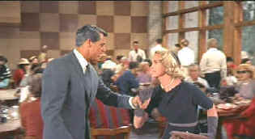

| North
By Northwest (SE)/A,A |
| MGM/1959/136/ANA
1.85 |
 |
|
Cited as an ISF Reference DVD. |
Classic Hitchcock themes are refined
by the master director of suspense in the breezily constructed North By Northwest. The wrong
man erupts with easy precision as advertising man Roger Thornhill is mistaken for a spy in the Oak
Room at the Plaza Hotel. Hitchcock's fascination with bigger than life props reaches the heights of
Mount Rushmore as his heroes are pursued to the very tip of Lincoln's nose.
 |
| Under the stare of Mount Rushmore.
©Warner |
Cary Grant embodies the perfect Hitchcock
star. Grant's ability to turn a phrase with ultimate sophistication, to look cool under the most
dire circumstances, and to project convincing screen sex appeal, makes him a match for Hitchcock's
own screen fantasies. In North By Northwest, Hitchcock finds a grand foil for Grant's suave
presence in James Mason, who brings his own
old world sophistication to villain James Van Damme. Eva Marie Saint is an easy fit for Eve
Kendall and even Martin Landau gets to exercise his dark side as Van Damme henchman Leonard.
The original script by Ernest Lehman is a wonderful, whimsical work. Beginning
with a couple of suggestions from Hitchcock, Lehman crafted a plot that in some ways is a homage to
the director's body of work. Elements from The 39 Steps, Sabotage,
The Man Who Knew Too Much find their way
into North by Northwest. The script, with sharp dialogue and brilliant transitions, however,
goes beyond anything Hitchcock did before or after. Lehman, who knack for dialogue made Sweet Smell of Success
crackle with New York life and energy, gives Hitchcock a rich bag of tricks to ply his trade.
Hitchcock collaborators composer Bernard Herrmann and cinematographer
Robert Burks are in top form with North by Northwest. Burks lights the stage sets of Mount
Rushmore with a fantastic glow and Herrmann's signature strident passages emphasize the danger and
menace.
This is a stunning transfer of a classic film. Shot in VistaVision, a big
negative process, the DVD soaks up the detail and color saturation from the transfer elements with
breathtaking precision. There was little variation in color saturation, a problem that often
plagues older three strip Technicolor films. Look at Chapter 28 as an example of how well
this disc transfers to DVD. It's a hotel room tête-à-tête between Grant and Saint. Saint is
wearing a black dress heavily brocaded with red flowers. The red on black is stunning. There is no
hint of bleeding between the red and black. The fabric on the lamp shade is a transfer nightmare,
yet on North by Northwest it is thoroughly stable. The complex weave retains individual
integrity. Look at the ruby necklace worn by Saint. Each jewel maintains its own space and shape,
and there's sparkle in them.
Hats off to Warner for delivering North by Northwest in a fine
special edition. Screenwriter Ernest Lehman provides audio commentary, remembering the great
Hitchcock and emphasizing his own contribution as creator of North by Northwest. Star Eva
Marie Saint hosts a tightly produced 40 odd minute documentary on the making of North by
Northwest. Saint's charming narration points out the pleasures of working with Hitchcock and
Grant, and even points her finger at a small boy with his fingers in his ears in anticipation of a
gun shot.
|
|
 . .
The
Movie Poster Archive include extensive poster images from the films of stars like Susan Hayward,
Kirk Douglas, Katharine Hepburn and many more. Our featured star is Cary Grant.

Selections from the feature archive include articles on Akira Kurosawa, Frank Darabont, Blonde Bimbos, Hollywood Street Gangs, or Vietnam: The Hollywood Pariah, and many more....
Film noir: The phrase hangs awkwardly on the tongue, shadowy images
peek out from behind half-closed doors. Click on the Noir and Noir Again symbol
for a look into the dark spaces of Hollywood's revisiting of film noir.
 
Fine reviews, features and news on DVD. The Big Picture
has been doing DVD as long as anyone. Jeff McNeal and Bob Banka feed on a steady diet of DVDs.

Cyber Theater is an outstanding source for accurate video information. Check out their 16 x 9
format guide for a thorough understanding of DVD encoded that way.
 Brad Lang continues to add more interesting to the extensive collection
at Classic Movies. Everything from actors and actress to your
favorite directors is linked at the site. Brad Lang continues to add more interesting to the extensive collection
at Classic Movies. Everything from actors and actress to your
favorite directors is linked at the site.

News, information, features about current films in theaters and in the
pipeline. Easy to use interface.

Looking for information about widescreen movies and hardware. The Widescreen Movie Center
is the place to go.
|